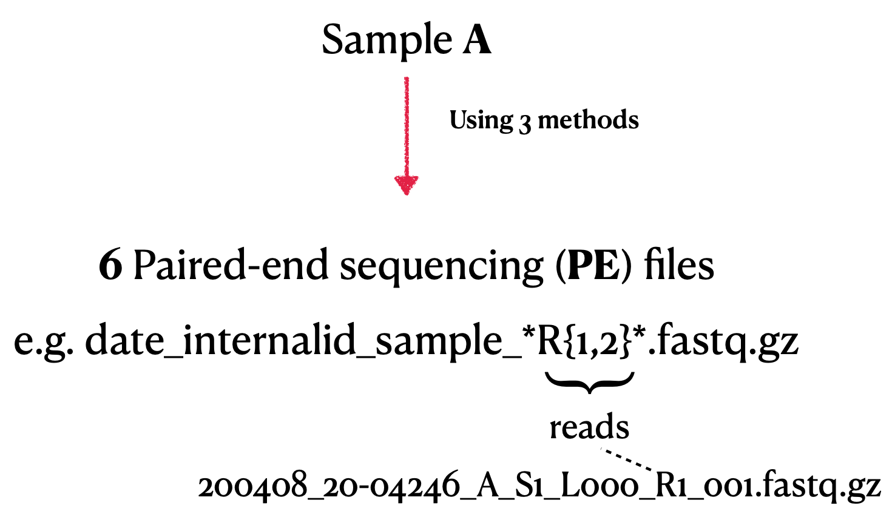

SARS-CoV-2 Genome Assembly from Illumina Reads¶


Welcome to the documentation for the nf-illumina2lineage pipeline.
Overview¶
This repository provides a complete pipeline for assembling and analyzing the genome of SARS-CoV-2 using Illumina paired-end sequencing data. It includes steps for quality control, mapping, variant calling, primer clipping, consensus sequence generation, lineage annotation, and phylogenetic analysis.
Key Features¶
- Automated environment setup using
mambaandconda - Comprehensive quality control with
fastqcandfastp - Mapping and visualization using
minimap2,samtools, andIGV - Primer sequence clipping for clean alignments
- Variant calling with
freebayesand VCF filtering withvcfR - Consensus sequence generation and lineage assignment with
pangolin - Phylogenetic analysis and multiple sequence alignment with
mafftandiqtree - Clear documentation and modular structure
System Requirements¶
- Operating System: Linux (tested on Fedora 38)
- Processor: Intel i5 or equivalent, with multithreading support
- Memory: Minimum 8 GB
- Software: Anaconda/Miniconda, mamba, R, and the listed bioinformatics tools
Dependencies¶
The pipeline requires the following tools, managed via mamba:
- QC: fastqc, fastp, multiqc
- Mapping: minimap2, samtools, bamclipper
- Variant Calling: freebayes, vcftools, bcftools
- Sequence Analysis: vcfR, mafft, iqtree, pangolin
- Visualization: gnuplot, IGV, jalview
Installation¶
- Clone the repository:
bash git clone https://github.com/bibymaths/nf-illumina2lineage.git cd nf-illumina2lineage - Install
mambaand create the environment:bash wget "https://github.com/conda-forge/miniforge/releases/latest/download/Mambaforge-Linux-x86_64.sh" bash Mambaforge-Linux-x86_64.sh conda update -y conda mamba env create -p ./envs/projectSARS --file environment.yaml mamba activate ./envs/projectSARS
Pipeline Workflow¶
- Environment Setup: Install dependencies and configure the environment.
- Data Preparation: Download input datasets and reference genomes.
- Quality Control: Evaluate and preprocess raw sequencing reads.
- Mapping: Align reads to the reference genome.
- Primer Clipping: Remove primer sequences from alignments.
- Variant Calling: Identify variants in the genome.
- Filtering & Masking: Use an R script for QC and filtering of VCF files.
- Consensus Generation: Generate consensus sequences from filtered variants.
- Lineage Annotation: Assign SARS-CoV-2 lineages using
pangolin. - Phylogenetic Analysis: Perform multiple sequence alignment and build phylogenetic trees.
Input Data¶
- Illumina paired-end sequencing data
- SARS-CoV-2 reference genome (NCBI accession: NC_045512.2)
Output¶
- Quality control reports (
.html,.json) - Aligned sequences in BAM and VCF formats
- Consensus sequences in FASTA format
- Lineage annotations
- Phylogenetic trees and visualizations
Usage¶
- Edit the
config.shfile to specify input data paths and parameters. - Run the pipeline:
bash bash scripts/run_pipeline.sh - View results in the
results/directory.


License¶
This project is licensed under the MIT License. See the LICENSE file for details.
Contact¶
For questions or issues, please contact: - Abhinav Mishra - Email: mishraabhinav36@gmail.com